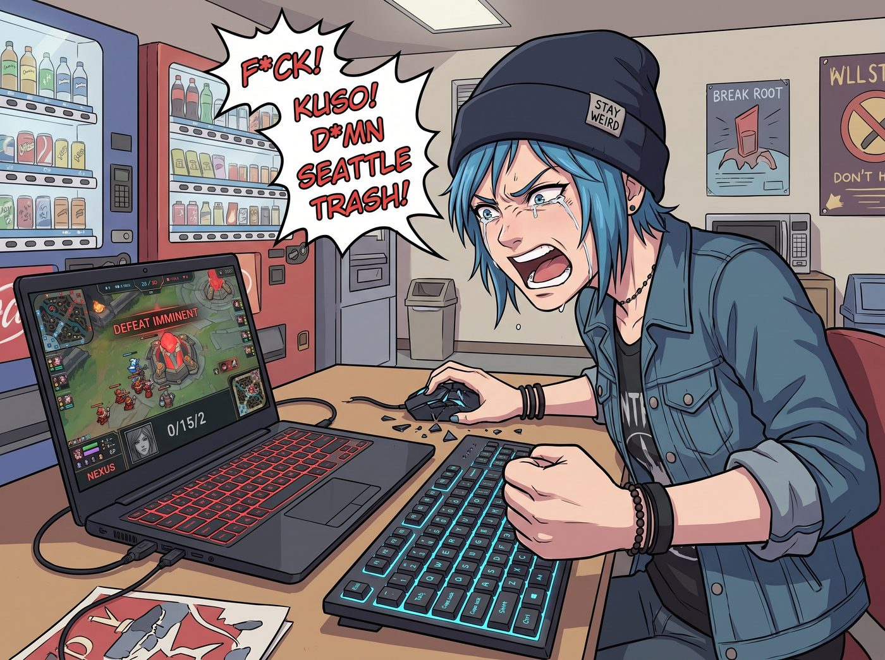

幀數博弈

二號車廂的休息區裡，充斥著 Chloe 砸滑鼠的清脆聲響和極端暴躁的西雅圖街頭髒話。
「這群白痴！這群只會送頭的單細胞生物！」
Chloe 對著她那台電競筆電無能狂怒。螢幕上是一場正在進行的、充滿年代感的5v5 MOBA遊戲。原本前期大好順風的局勢，因為四個路人隊友的無腦開戰，硬生生被打成了被敵方兵臨城下的極端逆風局。
看著自己那已經死到快不值錢的核心英雄，以及敵方正在狂敲主堡的五個人，Chloe 絕望地將手伸向了鍵盤上的組合鍵，準備在一場可恥的怒退中結束這場排位賽。
一、防禦性聲明
就在這時，一陣帶著爽身粉香氣的微風飄過，實習生 Lily 幽靈般地出現在了電競椅的後方。
Chloe 像觸電一樣猛地轉過頭，一隻手死死護住鍵盤，另一隻手指著 Lily 的鼻子，發出了極度嚴厲的防禦性聲明。
「聽著，Lily！老娘事先聲明！」Chloe 喘著粗氣，眼眶因為熬夜打排位而發紅，「第一，不准駭入遊戲公司的伺服器去修改我的金幣數據！第二，不准透過IP反查對面五個人的真實身分，然後用稅務局或聯邦法規去查封他們的銀行帳戶逼他們斷線！我只會玩這款懷舊遊戲了，如果妳用黑魔法把它搞倒閉了，我就真的沒有精神寄託了！懂嗎？！」
Lily 眨了眨無辜的大眼睛，乖巧地將雙手交疊在身前。「收到您的合規訴求，Price 學姐。我保證嚴格遵守該遊戲的最終用戶許可協議與伺服器底層物理引擎的全部規則，絕不使用任何第三方外部腳本或行政越權手段。」
Lily 溫柔地看著螢幕上僅剩十分之一血量的主堡：「但是，根據我對目前局勢的資產負債表分析，這場排位賽的淨值還沒有完全歸零。學姐，您的英雄剛好復活，需要我為您進行一次資產重組嗎？」
Chloe 愣了一下，半信半疑地從電競椅上讓開了位子：「妳……妳真的會打電動？不靠法規告死對面？」
二、幀數博弈
Lily 坐進了那張對她來說有些太大的電競椅，輕輕推了推反光的圓框眼鏡。
「學姐，電子競技的本質，不過是一場在封閉系統內的動態資源分配與幀數博弈罷了。」
接下來的三分鐘，Chloe 站在 Lily 身後，經歷了她短暫的電競生涯中最恐怖的一次信仰崩塌。
Lily 沒有展現出那種職業選手般瘋狂敲擊鍵盤的高操作數。她的動作極度平靜、勻速，甚至帶著一種操作 Excel 表格時的冰冷理性。
首先，Lily 用零點五秒的時間，打開了遊戲的控制台，關閉了所有華麗的粒子特效、陰影和環境裝飾，將畫質降到了最低，只留下最純粹的幾何碰撞體積。「視覺干擾會降低大腦的決策效率，我們只需要看清碰撞箱就夠了。」Lily 輕聲說道。
接著，她控制著 Chloe 那個裝備落後的刺客英雄，隻身衝出了泉水。
「對面五個人抱團推進！妳這樣出去是送死！」Chloe 尖叫。
「敵方前排坦克的控制技能冷卻時間為十四秒，施法前搖為零點三五秒；敵方射手的攻擊間隔為零點八二秒。」Lily 的雙眼死死盯著螢幕，瞳孔裡彷彿有綠色的數據流在瘋狂運算。
她按下了滑鼠右鍵。
螢幕上的英雄以一種極度詭異、違反人類直覺的Z字型步伐走位，在敵方五人的技能雨中穿梭。「向左偏移四十二個單位像素，規避範圍傷害邊緣；利用小兵的攻擊間隔，作為掩體阻擋非指向性技能。」Lily 的語氣平靜得像是在念說明書。
敵方五個人驚恐地發現，他們所有的技能，總是差那一到兩個像素，擦著這個刺客的衣角飛過。
三、暴走五連殺
「對面法師的魔力值已低於百分之十二，無法釋放終極技能，現在是壞帳處理時間。」Lily 的手指終於在鍵盤上按下了第一個攻擊鍵。
沒有熱血沸騰的怒吼，沒有華麗的連招展示。Lily 的每一次普攻、每一次技能釋放，都精準地卡在敵人攻擊動畫的後搖階段。她像一個拿著手術刀的外科醫生，在敵方的陣型中進行著殘酷的物理切割。
「擊殺輔助，回收兩百五十金幣，觸發裝備閾值；轉向射手，傷害溢出計算完畢，只需三次普攻加一次技能……」
Double Kill！Triple Kill！Ultra Kill！
當遊戲語音發出震耳欲聾的連續擊殺音效時，敵方最後一個活著的重裝坦克，正試圖絕望地逃回防禦塔下。
「他的移動速度為三百四十，防禦塔距離為一千兩百碼，預計三點五秒後進入安全區。我的技能還有三點二秒冷卻。」Lily 連滑鼠都沒有劇烈滑動，她只是提前將游標停在了地圖上的一個空白處，然後靜靜地等待了三點二秒。
按下按鍵。刺客英雄化作一道殘影，精準地落在了坦克逃跑路線的正前方，一擊封喉。
Rampage！
四、質疑與官方回覆
整個基地瞬間安靜了下來。沒有人說話，只有主堡正在緩慢回血的音效。
遊戲的全頻聊天室裡瞬間炸開了鍋。敵方五個人瘋狂地打字：對面刺客絕對開掛了！腳本！這絕對是躲避腳本！這走位根本不是人類！
Lily 依然面無表情。她打開全頻聊天，用一種極度官方的語氣回覆道：「尊敬的對手您好。我並未使用任何第三方腳本。剛才的交戰結果，純粹是基於對貴方技能冷卻軸與碰撞體積的精確計算。建議貴方在下次團戰時，優化技能釋放的資源重疊率。祝您遊戲愉快。」
發送完畢後，Lily 帶著超級小兵，一路平推，冷酷地摧毀了敵方的主堡。
Victory。
五、白打的這輩子
Chloe 呆呆地看著結算畫面，那張寫滿了積分獎勵的螢幕，倒映在她充滿敬畏與恐懼的臉上。
「妳……妳把這個遊戲……當成數學題來解了？」Chloe 艱難地嚥了一口口水。
「這只是一次基礎的動態資源優化而已，Price 學姐。」Lily 乖巧地站起身，將電競椅還給了 Chloe，「只要將感性從操作中剝離，將對手視為一行行可預測的代碼，任何逆風局都能透過精密的執行力轉化為順風局。您的排位分數已經挽回了。」
Victoria 端著紅酒杯靠在門框上，看完了這場單方面的屠殺，冷笑了一聲：「這就是為什麼我從不玩這些電子遊戲。當妳們還在為了輸贏大吼大叫時，Lily 這種人已經在底層邏輯上對妳們進行了維度打擊。這根本不是遊戲技術，這是量化交易策略在電子競技上的降維應用。」
Max 默默地舉起相機，拍下了螢幕上的 Victory 字樣，以及 Chloe 懷疑人生的表情。
而 Kate 則走過來，溫柔地拍了拍 Chloe 的肩膀。「Chloe，妳看，Lily 用她那不可思議的專注力，平息了戰場上的仇恨與紛爭呢。」小天使看著螢幕，雙手合十，「她讓對手認識到了自身的不足，也幫妳守護了最珍貴的排位分數。這一定是一場充滿了愛與和平的奇蹟逆轉呀！」
Chloe 痛苦地抱住頭，看著自己那剛剛晉級的段位，她突然覺得，如果打電動需要把所有人的攻擊前搖都精確計算到小數點後兩位……那她這輩子的遊戲，好像算是白打了。在二號車廂，實習生不需要黑魔法，她的大腦本身，就是這個世界上最殘酷的外掛。